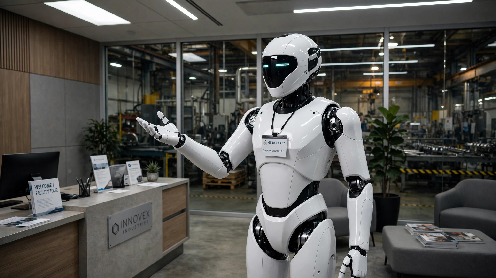

🤖 Robotics
The World's Most Profitable Humanoid Robot Company Makes 60% of Its Money From Tour Guides
Unitree Robotics shipped 5,500 humanoid robots last year, posted a 60% gross margin that beats Apple, and just won regulatory approval for a $619 million Shanghai IPO. Its own 364-page prospectus reveals the uncomfortable arithmetic: the bulk of its commercial humanoid revenue comes from robots greeting visitors in corporate lobbies.

Five thousand five hundred. That is how many humanoid robots Unitree Robotics shipped in 2025, more than any company on Earth, capturing 32.4% of the global humanoid market by unit volume. The Hangzhou-based company did something that Figure AI, Apptronik, Agility Robotics, and Tesla's Optimus division have not managed: it turned a profit. Revenue quadrupled to ¥1.708 billion ($251 million). Net income reached ¥278 million ($41 million). Gross margins hit 59.8%, which is 13 percentage points above Apple's hardware business. On Thursday, China's securities regulator approved Unitree's application for a STAR Market listing that would raise ¥4.2 billion ($619 million) and value the company at roughly $6.2 billion.
Read the 364-page prospectus filed with the Shanghai Stock Exchange, though, and a different picture emerges. Buried in the revenue-breakdown section, Unitree discloses that its humanoid robots' "industry-application revenue mainly came from enterprise reception and tour-guide use, intelligent manufacturing and intelligent inspection, with enterprise tour-guide use accounting for roughly 50%-70%." Scientific research and education, meanwhile, constitute the "bulk of sales" by unit volume.
The world's most successful humanoid robot company is, by its own accounting, primarily in the business of selling expensive tour guides.
What the Revenue Actually Says
Unitree's total 2025 revenue of ¥1.708 billion breaks into two product families: quadruped robots (the dog-like machines it pioneered) and humanoids. In 2022, quadrupeds were 76.6% of revenue. By the first nine months of 2025, humanoids had overtaken them at 51.5% of main business revenue, up from 27.6% in 2024. That shift is real, and it represents the fastest product-category transition in any robotics company's history.
But follow the money one level deeper. At 51.5% of ¥1.708 billion, humanoid revenue was approximately ¥879 million ($129 million). Across 5,500 shipped units, that implies average revenue of ¥159,800 per humanoid ($23,500), roughly in line with the disclosed average selling price decline from ¥593,400 ($85,000) in 2023 to ¥167,600 ($25,000) by September 2025. Prices dropped 72% in two years while gross margins improved. Vertical integration of actuators, sensors, and control boards drove costs down faster than prices fell.
Now apply the prospectus's own application breakdown. If the "bulk" of units went to research and education, conservatively 60% of the 5,500, that leaves roughly 2,200 units deployed in commercial industry settings. Of those commercial deployments, 50-70% serve as enterprise tour guides and reception robots. Walk the math to its conclusion:
| Deployment Category | Estimated Units | Share of Total |
|---|---|---|
| Research & education | ~3,300 | ~60% |
| Commercial: tour guides / reception | ~1,100–1,540 | ~20–28% |
| Commercial: manufacturing / inspection | ~660–1,100 | ~12–20% |
| Total | 5,500 | 100% |
Somewhere between 660 and 1,100 of the world's 5,500 most commercially successful humanoid robots are doing anything resembling factory work. The rest walk guests through lobbies or serve as research platforms in university labs. Both of those are legitimate businesses. Neither is the factory-automation revolution that justifies a $6.2 billion valuation or Morgan Stanley's projection of 300 million Chinese humanoids by 2050.
The 55% CAGR Nobody Questioned
Morgan Stanley's January 2026 forecast projects 23 million Chinese humanoid robot sales by 2040 and approximately 300 million units in active deployment by 2050. Start from Unitree's 2025 base of 5,500 shipped units (which represents the entire global industry leader's output, not just China), and the math is stark.
Reaching 300 million deployed units by 2050 from a 2025 base of 5,500 requires a compound annual growth rate of 54.7%, sustained without interruption for 25 consecutive years. For comparison, the smartphone industry grew at approximately 30% CAGR from 2007 to 2015, its fastest adoption period in history, during which it rode an existing cellular infrastructure, existing app developer ecosystems, existing consumer electronics supply chains, and a device that could be manufactured by the millions on existing semiconductor fabrication lines. Smartphones also had an immediately obvious use case from day one: replacing a device people already carried.
Humanoid robots need to sustain nearly double the smartphone adoption rate for nearly triple the duration, starting from a technology that its own leading manufacturer describes as having "limited commercial applications" and whose primary real-world deployment is greeting visitors. The 23 million annual sales target by 2040 alone requires approximately 5,200 humanoid robots rolling off production lines every single day, 365 days a year. Unitree's current daily output, extrapolating from 5,500 annual units, is roughly 15 robots per day.
The Deceleration Signal
Unitree's recent quarterly results introduce a complication. In Q1 2026, revenue reached ¥420 million, up 69% year-over-year. That sounds impressive until you compare it to 2025's full-year growth rate of 333%. Revenue growth decelerated by nearly 80% in a single quarter. Net income fell 53% year-over-year to ¥40.2 million, even as revenue climbed. The company's own H1 2026 guidance of ¥1.05-1.13 billion implies full-year growth in the range of 23-32% if the second half mirrors the first half's pace, a dramatic cooling from the 333% headline that anchors the IPO narrative.
Margin compression accompanied the slowdown. Net margin contracted from 16.37% in 2025 to 9.6% in Q1 2026. The cause is structural: as Unitree shifts from high-margin quadrupeds to lower-priced humanoids (the G1 at roughly $25,000 versus earlier $85,000 models), volume rises but per-unit profit declines. This is the classic hardware scaling dilemma, and Unitree is encountering it far earlier in its growth curve than its IPO valuation anticipates. At the guided H1 2026 midpoint of ¥260 million in net profit, annualized earnings of approximately ¥520 million support a price-to-earnings ratio of roughly 81 times at the $6.2 billion target valuation. Reuters calculated the multiple at 74 times using a slightly different annualization method. Either way, it is a number that demands sustained hypergrowth, not deceleration.
What a $25,000 Robot Actually Replaces
The investment thesis for humanoid robots rests on labor substitution: a robot that costs $25,000 and replaces a $19,000-per-year manufacturing worker (the fully loaded cost of an average Chinese factory employee) pays for itself in roughly 16 months. On paper, the economics are compelling. In practice, the calculation requires several asterisks that the prospectus and the analyst reports tend to omit.
Battery runtime is the first constraint. Comparable humanoid platforms from competitors operate for four to eight hours per charge, requiring either battery swaps or downtime. At six productive hours per day (accounting for charging, maintenance, and supervision), a humanoid robot delivers 60-75% of a human worker's available hours. The payback period stretches to 21-27 months. Factor in the cost of charging infrastructure, software licensing, network connectivity, and the on-site technicians required to supervise early-generation robots (Unitree's own prospectus acknowledges that its humanoids lack the dexterity for basic tasks like pouring water or plugging in cables), and the break-even point drifts past two years. In industries with annual employee turnover exceeding 100%, which characterizes much of Chinese light manufacturing, the argument for a 24-month capital commitment against a workforce that rotates every 12 months weakens considerably.
None of this means labor substitution will never work. Unitree's 72% price reduction in two years is genuinely remarkable, and the 60% gross margin suggests room for further price cuts without destroying profitability. At $10,000 per unit, the payback arithmetic shifts decisively in the robot's favor. The question is whether Unitree reaches $10,000 before the market's patience with 74-times earnings runs out.
Strongest Counterargument
The strongest case for Unitree at $6.2 billion is that profitability at scale is the moat. Every other humanoid company burns cash: UBTech Robotics, valued at $7.6 billion on the Hong Kong exchange, remains unprofitable. Agility Robotics, the first US pure-play humanoid equity, trades on promise. Figure AI, valued at $2.6 billion after its Series B, has no commercial revenue. Tesla's Optimus has shipped zero units to customers outside Tesla's own factories. Unitree is the only company in the world that has demonstrated it can build humanoid robots at scale, sell them at a profit, and improve margins while cutting prices. In hardware, that combination is extraordinarily rare and usually predictive of long-term dominance.
The tour-guide critique also understates the strategic value of deployed units. Each robot in a lobby or a lab generates operational data, encounters edge cases, and feeds Unitree's embodied AI training pipeline. Apptronik just built a 90,000-square-foot "Robot Park" in Austin specifically to collect this kind of data at scale, spending hundreds of millions to do manually what Unitree's 5,500 deployed units do organically. If the data flywheel works, today's tour guides become tomorrow's training corpus for factory robots, and the company that has 5,500 units in the field has a structural lead over competitors with fewer than 100.
Limitations
This analysis works from public disclosures and press reporting about the Unitree prospectus, not a direct reading of the full 364-page Chinese-language filing. The deployment breakdown (60% research, 20-28% tour guides, 12-20% manufacturing) is our estimate based on the prospectus's qualitative language, not a precise tabulation. Battery runtime and maintenance cost comparisons use publicly available specifications from comparable humanoid platforms, not Unitree's own performance data, which is not fully disclosed. The labor-substitution payback model uses average Chinese manufacturing wages from the National Bureau of Statistics and does not account for regional wage variation, which can differ by 40-60% between coastal and interior provinces. Morgan Stanley's 300-million-unit forecast is cited as reported; its underlying methodology is behind a paywall.
The Bottom Line
Unitree Robotics built something real, a profitable humanoid robot company with genuine manufacturing scale and a cost curve that moves in the right direction at a speed nobody else has matched. That matters, and it is why the $619 million IPO will almost certainly succeed. But the distance between "profitable tour-guide robot company" and "$6.2 billion factory-automation platform" is the distance between what the prospectus actually says and what the valuation requires you to believe. The 60% gross margin is Apple-grade hardware economics applied to a product whose primary commercial deployment is walking visitors through lobbies. The 333% revenue growth is real, but it decelerated to 69% in a single quarter. The 300-million-unit future requires a 55% compound annual growth rate sustained for 25 years, from a technology whose own manufacturer says it cannot yet pour a glass of water. For investors willing to bet on the 15 daily robots becoming 5,200 daily robots, Unitree is the only game in town. For everyone else, the prospectus is the most honest document in the humanoid industry, and what it honestly says is that the revolution is still in the lobby.
What You Can Do
If you are evaluating humanoid robots for an industrial deployment, Unitree's G1 at $25,000 is the price-to-beat benchmark, but set expectations around the prospectus's own admission: tour-guide and reception tasks are where the technology delivers today, not open-ended factory manipulation. Pilot structured, repeatable tasks first and measure actual uptime against the battery-runtime specifications before modeling full-shift labor substitution. If you are investing in robotics equities or ETFs, compare Unitree's 60% gross margin and 16% net margin against UBTech's operating losses and Agility's pre-revenue status; profitability at scale is a meaningful differentiator worth paying a premium for, but 74 times earnings in a decelerating-growth quarter is pricing in a future that the company's own filing does not yet support. If you are a policy researcher tracking China's industrial automation push, the Unitree prospectus is the single most data-rich public document on the actual state of humanoid robotics, and its candid acknowledgment of limited applications is more informative than any ministry white paper. Read it directly.